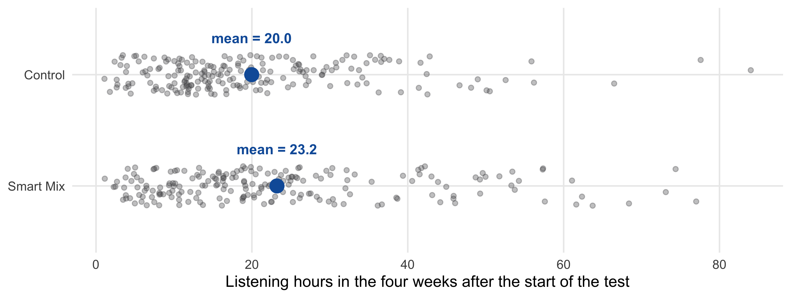
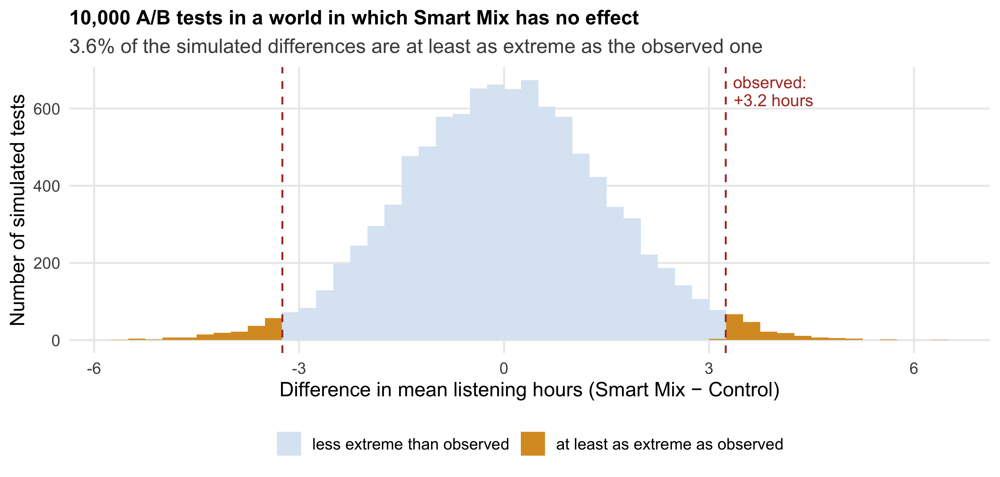
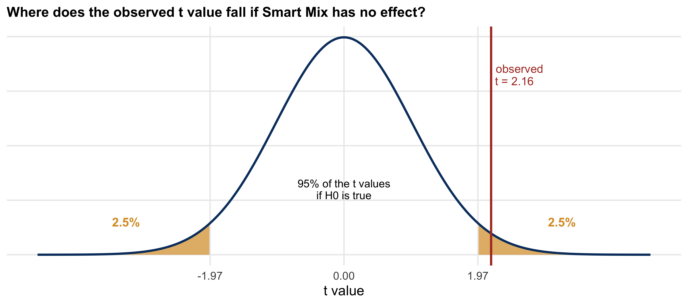
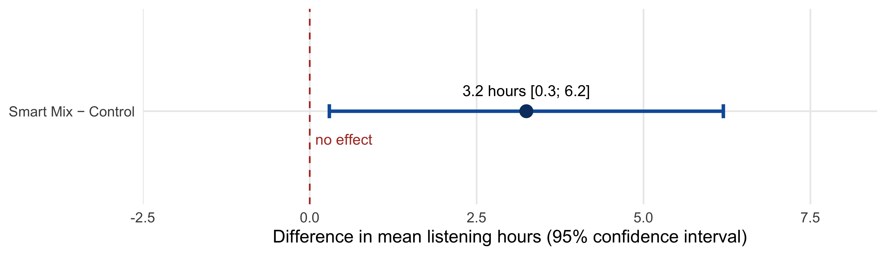
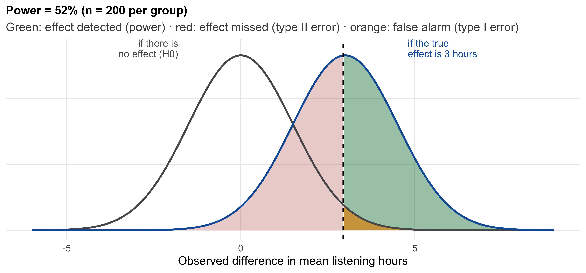
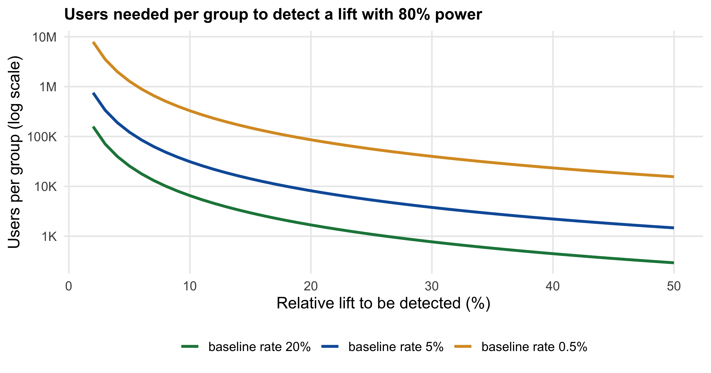
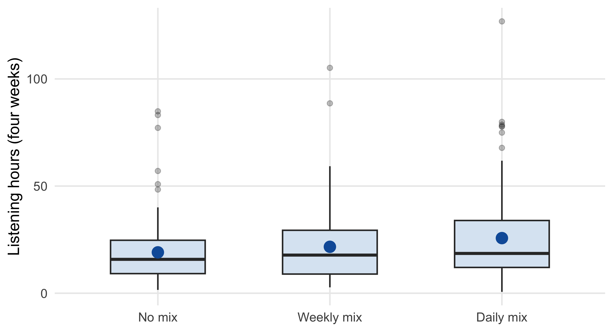
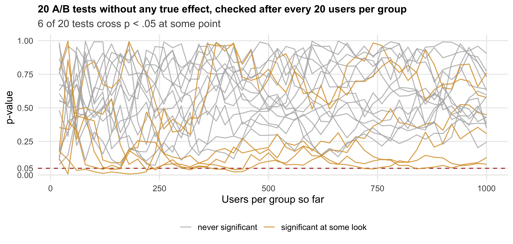

4 Learning from Experiments
Driving question: Did it work?
Randomized experiments are the most credible way to learn what an action causes (Section 1.6). But running an experiment is only half of the job: the result comes from a sample, and every sample carries random error (Chapter 3). This chapter is about the second half — how to read the result of an experiment. After working through this chapter you will be able to:
- Explain the logic of a statistical test: comparing the observed difference with the differences that chance alone would produce
- Run and interpret a t-test for the difference between two groups — and read every line of its output
- Distinguish statistical significance from practical relevance, and quantify the size of an effect
- Compare shares (e.g., conversion rates) between groups
- Explain type I and type II errors and statistical power — and determine the sample size an experiment needs before running it
- Choose an appropriate test for other designs: more than two groups, the same people in both conditions, skewed data
- Use p-values responsibly — and recognize practices that make them meaningless
The chapter builds on the Smart Mix A/B test from Section 3.1.1. The formulas are kept to a minimum: we compute a standard error once, by hand, to see what a test does — afterwards, R does the arithmetic, and we concentrate on the interpretation.
4.1 Back to the A/B test
Recall the situation: a streaming service tested its new Smart Mix feature on 400 randomly selected users. The 200 users with Smart Mix listened 3.2 hours more on average in four weeks than the 200 users without it (Figure 4.1).
In Section 3.1.1, we ran a t-test and postponed its interpretation. Here is the output again:
library(tidyverse)
set.seed(31)
ab_test <- tibble(
group = factor(rep(c("Control", "Smart Mix"), each = 200), levels = c("Smart Mix", "Control")),
hours = c(rgamma(200, shape = 2, scale = 10), rgamma(200, shape = 2, scale = 11.5))
)
t.test(hours ~ group, data = ab_test)
Welch Two Sample t-test
data: hours by group
t = 2.1617, df = 386.96, p-value = 0.03125
alternative hypothesis: true difference in means between group Smart Mix and group Control is not equal to 0
95 percent confidence interval:
0.293571 6.196096
sample estimates:
mean in group Smart Mix mean in group Control
23.21980 19.97497 The product team wants answers to three questions, and this chapter takes them in turn:
- Could the difference be chance? Even if Smart Mix did nothing, two random groups of 200 users would never have exactly the same mean. Is 3.2 hours more than chance would typically produce? (Section 4.2 and Section 4.3)
- How large is the effect — and does it matter? A “real” effect can still be too small to be worth the rollout. (Section 4.4)
- Was the experiment large enough? Would a larger experiment have given a clearer answer — and how large should the next one be? (Section 4.7)
4.2 The difference between two means
4.2.1 Signal and noise
The key to the first question is an idea you already know from Chapter 3: any number computed from a sample varies from sample to sample. This also holds for the difference between two group means. If we could repeat the Smart Mix experiment many times — each time with 400 new users, randomly split — we would get a slightly different difference every time. The distribution of these differences is the sampling distribution of the difference, and it has the same three properties as the sampling distribution of a mean:
- It is centered on the true difference in the population — the true effect of Smart Mix.
- It is approximately normal — thanks to the central limit theorem, even though listening times are skewed.
- Its width is the standard error of the difference, which combines the uncertainty of both group means:
\[ SE_{\bar{x}_1 - \bar{x}_2} = \sqrt{\frac{s_1^2}{n_1} + \frac{s_2^2}{n_2}} \]
For Smart Mix: \(\sqrt{16.2^2 / 200 + 13.7^2 / 200}\) = 1.50 hours. Differences of about ± 1.5 hours are therefore the “typical wobble” we must expect from random sampling alone; differences of about ± 3 hours (two standard errors) are rare, but possible.
This is the only standard error we compute by hand in this chapter. Every test that follows works on the same principle: it compares the signal (the observed difference) with the noise (the standard error — the differences chance alone would produce).
4.2.2 A world in which Smart Mix does nothing
To judge whether 3.2 hours is a lot, imagine a world in which Smart Mix has no effect at all: all users come from the same population, and any difference between the groups is pure chance. Figure 4.2 simulates 10,000 A/B tests in this world.

In this no-effect world, the differences scatter around zero in a bell shape, as the central limit theorem predicts. A difference as large as the one we observed — 3.2 hours or more, in either direction — occurs in only about 3.6% of the simulated tests. So either Smart Mix has an effect, or the team observed a fairly rare accident. This comparison is exactly what a statistical test formalizes.
4.3 Testing a hypothesis
4.3.1 Null and alternative hypothesis
A statistical test turns the thought experiment into a formal procedure. It starts with two competing statements about the population:
- The null hypothesis (\(H_0\)): there is no effect. The mean listening time of all users with Smart Mix equals that of all users without it: \(\mu_1 = \mu_2\).
- The alternative hypothesis (\(H_1\)): there is an effect: \(\mu_1 \neq \mu_2\).
The test asks: if the null hypothesis were true, how surprising would our data be? If they would be very surprising, we reject the null hypothesis in favor of the alternative.
4.3.2 The test statistic: signal divided by noise
To measure “how surprising”, the test expresses the observed difference in units of its standard error:
\[ t = \frac{\text{observed difference} - \text{difference under } H_0}{\text{standard error of the difference}} = \frac{3.24 - 0}{1.50} = 2.16 \]
The observed difference is 2.16 standard errors away from zero. If \(H_0\) is true, t values follow a t-distribution (for samples of this size, practically the normal distribution): 95% of them lie between about −1.97 and +1.97 (Figure 4.3). Our value lies outside this range.

4.3.3 The p-value
The p-value is the probability of observing a difference at least as extreme as the one in our data — if the null hypothesis were true. For Smart Mix, p = 0.031: in a world in which Smart Mix does nothing, only about 3 in 100 experiments would produce a difference of 3.2 hours or more (in either direction). Our simulation in Figure 4.2 gave almost the same answer (3.6%).
The conventional decision rule compares the p-value with a significance level \(\alpha\) chosen in advance, usually 5%:
- If \(p < \alpha\): the result is statistically significant — we reject \(H_0\). For Smart Mix: 0.031 < 0.05, so we conclude that Smart Mix increases listening time.
- If \(p \geq \alpha\): we do not reject \(H_0\). Note the careful wording: this does not show that there is no effect — only that the data are compatible with no effect (Section 4.9).
4.3.4 The confidence interval of the difference
The test gives a yes/no answer; the confidence interval of the difference tells us more: the range of effects that are compatible with the data. It is built exactly like the confidence interval of a mean (Section 3.6) — estimate ± critical value × standard error:
\[ (\bar{x}_1 - \bar{x}_2) \pm t_{0.975} \times \sqrt{\frac{s_1^2}{n_1} + \frac{s_2^2}{n_2}} \]
For Smart Mix: 3.24 ± 1.97 × 1.50, i.e., from 0.29 to 6.20 hours (Figure 4.4).

The interval and the test always agree: if the 95% interval does not contain zero, the test is significant at the 5% level, and vice versa. But the interval adds information the p-value hides: the effect could be as small as a quarter of an hour or as large as six hours. For a rollout decision, that range is often more useful than the yes/no of the test.
4.3.5 Reading the output
With these concepts, every line of the output becomes readable (Table 4.1).
t.test()
| Output | Meaning |
|---|---|
Welch Two Sample t-test |
A t-test for two independent groups that does not assume equal variances in both groups (R’s safe default) |
t = 2.1617 |
The observed difference is 2.16 standard errors away from zero |
df = 386.96 |
Degrees of freedom — determine the exact shape of the t-distribution; with large samples, practically irrelevant |
p-value = 0.03125 |
If Smart Mix had no effect, a difference at least this large would occur in 3.1% of experiments |
alternative hypothesis: ... |
The test is two-sided: it looks for a difference in either direction |
95 percent confidence interval: 0.29 6.20 |
The range of effects compatible with the data |
mean in group ... |
The two group means; their difference is the estimated effect |
NoteUnder the hood: what are degrees of freedom?
Degrees of freedom are the number of values that are still free to vary once we have used the data to estimate something.
An everyday example: you have a budget of 100 € for three presents and decide to spend it all. You can choose the price of the first present freely (say 30 €) and that of the second (50 €) — but then the third is fixed: it must cost 20 €. Three prices, one constraint, two degrees of freedom.
Statistics works the same way. To compute the standard deviation of a sample, we first need its mean. Once the mean is fixed, only \(n - 1\) of the \(n\) deviations from the mean are free — the last one is determined by the others (they must add up to zero). This is why the sample standard deviation divides by \(n - 1\) (Section 3.4), and why a sample of \(n\) observations has \(n - 1\) degrees of freedom for estimating its variability.
Why does this matter? The fewer degrees of freedom, the less information we have about the variability in the data, and the more uncertain our standard error is. The t-distribution accounts for this: with few degrees of freedom, it has fatter tails and larger critical values (Table 3.3); with many, it becomes the normal distribution. For two groups of 200 users, we have about 400 − 2 = 398 degrees of freedom — plenty. (The Welch test reports a non-integer value such as 386.96, because it combines the two groups’ variances with different weights; the idea is the same.)
The same logic appears in the ANOVA (Section 4.8): with 3 groups, the group means have 3 − 1 = 2 degrees of freedom (once the overall mean is known, the third group mean is fixed), and the variation within the groups has \(N - 3\) degrees of freedom (one mean estimated per group).
NoteUnder the hood: one-sided or two-sided?
A two-sided test asks whether the groups differ in either direction; a one-sided test only looks in one direction (e.g., “Smart Mix increases listening time”) and is therefore more likely to find an effect in that direction. The temptation is obvious — but a one-sided test ignores the possibility that the new feature makes things worse, and it must be decided before seeing the data. In business experiments, where a negative effect is exactly what you want to know about, the two-sided test is the right default. In R: t.test(..., alternative = "greater").
NoteUnder the hood: assumptions of the t-test
The t-test for two independent groups relies on three assumptions:
- Independent observations: each user appears in only one group, and users do not influence each other. Random assignment usually takes care of this — but watch out for spillovers (Section 1.6).
- An approximately normal sampling distribution: guaranteed by the central limit theorem for reasonably large samples (Section 3.5). With small samples and strongly skewed data or extreme outliers, consider the alternatives in Section 4.8.
- A metric outcome: the mean must be meaningful (Section 2.3).
Equal variances in both groups are not required: R’s default, the Welch test, does not assume them.
TipYour turn (5 min)
Run the t-test again, but only for the first 50 users of each group: t.test(hours ~ group, data = ab_test |> group_by(group) |> slice_head(n = 50)). How do the difference, the confidence interval, and the p-value change? Explain the change with the standard error.
4.4 How large is the effect?
A significant result tells us that the effect is probably not zero. It does not tell us whether the effect is large enough to matter. With a large enough sample, even a trivial difference becomes significant (Section 4.9). Always report the size of the effect — in three ways:
- In the original unit: Smart Mix users listened 3.2 hours more in four weeks. This is the number a manager can relate to a business case: what are 3.2 extra listening hours per user worth in retention or advertising revenue?
- Relative to the control group: 3.2 hours on a baseline of 20.0 hours is an increase of about 16%.
- Standardized: Cohen’s d divides the difference by the (pooled) standard deviation of the outcome:
\[ d = \frac{\bar{x}_1 - \bar{x}_2}{s_{\text{pooled}}}, \qquad s_{\text{pooled}} = \sqrt{\frac{(n_1 - 1)\, s_1^2 + (n_2 - 1)\, s_2^2}{n_1 + n_2 - 2}} \]
It expresses the effect in units of “how much users differ anyway” and makes effects comparable across studies with different outcomes. In R, the function cohen.d() from the psych package (which you know from Chapter 2) computes it, together with a confidence interval:
library(psych)
cohen.d(ab_test$hours, ab_test$group)$cohen.d lower effect upper
[1,] -0.4131497 -0.2167113 -0.02000216The sign only reflects the order of the groups (here: the second group minus the first); what matters is the size, \(d \approx\) 0.22, and the direction you know from the group means. Note the confidence interval: the standardized effect could be anywhere between almost zero and 0.41.
As a rough convention, \(d\) = 0.2 is considered a small, 0.5 a medium, and 0.8 a large effect (Cohen 1992). The effect of Smart Mix (\(d\) = 0.22) is small: the two groups overlap almost completely, as Figure 4.1 showed. Yet a 16% increase in listening time can be very valuable for a streaming service with millions of users. Small in statistical terms is not the same as unimportant in business terms — and vice versa. The conventions are a starting point, not a verdict.
4.5 Reporting the result
A good report of an experiment states the effect, its uncertainty, and the test — in words a manager can follow, with the numbers a statistician needs:
Users with Smart Mix listened on average 23.2 hours in four weeks, compared with 20.0 hours in the control group — an increase of 3.2 hours (+16%, 95% CI [0.3; 6.2] hours). The difference is statistically significant (Welch t-test: t(387) = 2.16, p = .031) but small in standardized terms (d = 0.22). The confidence interval is wide: the true effect could be anywhere between a few minutes and six hours.
Note the order: effect first, uncertainty second, test last. And note the final sentence — the honest caveat that tells the reader how much the conclusion is worth.
4.7 Errors, power, and sample size
4.7.1 Two ways to be wrong
Every test decision can be wrong in two ways (Table 4.2):
| No effect in reality (\(H_0\) true) | Effect in reality (\(H_0\) false) | |
|---|---|---|
| Test significant (reject \(H_0\)) | Type I error — false alarm (probability \(\alpha\)) | Correct: effect detected (probability = power, \(1 - \beta\)) |
| Test not significant (keep \(H_0\)) | Correct | Type II error — effect missed (probability \(\beta\)) |
The same two kinds of mistakes appear in many everyday decisions (Table 4.3) — and in each case, the two errors have very different consequences.
| Situation | Type I error (false alarm) | Type II error (missed effect) |
|---|---|---|
| Pregnancy test | The test says “pregnant”, but the woman is not | The test says “not pregnant”, but she is |
| Smoke detector | The alarm goes off because of burnt toast | A real fire, but the alarm stays silent |
| Court trial (“innocent until proven guilty”) | An innocent person is convicted | A guilty person is acquitted |
| A/B test of a new feature | A useless feature is rolled out — cost without benefit | A valuable feature is dropped — a missed opportunity |
The court trial shows the logic of a test particularly well: the null hypothesis (“innocent”) is kept unless the evidence is strong; a verdict of “not guilty” does not prove innocence — just as a non-significant test does not prove that there is no effect.
The significance level \(\alpha\) controls the false alarms: with \(\alpha\) = 5%, one in twenty experiments of an ineffective feature will nevertheless come out significant. The power of a test is the probability of detecting an effect that really exists. A common target is 80% power — accepting that one in five real effects of the assumed size will be missed. Lowering \(\alpha\) (fewer false alarms) reduces the power (more missed effects); the only way to reduce both errors at once is a larger sample.
4.7.2 What determines power
Power depends on three things (Figure 4.6):
- The size of the true effect: large effects are easier to detect than small ones.
- The sample size: larger samples shrink the standard error and separate the “no effect” distribution from the “effect” distribution.
- The variability of the outcome: the more users differ anyway, the harder it is to see the effect.

Applied to Smart Mix: if the true effect is about 3 hours, an experiment with 200 users per group has a power of only about 55% — almost a coin flip. The team was somewhat lucky to get a significant result; with a slightly unluckier draw of users, the same real effect would have been “not significant”.
ImportantWhere does the true effect come from?
In the widget, you set the true effect — a luxury you never have in practice: if we knew the true effect, we would not need the experiment. A power analysis is therefore always based on an assumed effect size. There are two sensible ways to choose it:
- The smallest effect that would still matter for the decision: e.g., “Smart Mix is worth rolling out if it increases listening time by at least 2 hours”. The experiment is then designed to detect effects of at least this size.
- Evidence from earlier experiments or published studies of similar interventions — with caution, since published effects tend to be overestimated (Section 4.9).
What you should not do is compute the power after the experiment using the effect you observed (“post-hoc power” or “observed power”). This number adds no information: it is a direct transformation of the p-value — a non-significant result always has low “observed power”. Power analysis belongs to the planning stage; after the experiment, the confidence interval tells you what the data can and cannot rule out.
4.7.3 Determining the sample size in advance
Because power depends on the sample size, the sample size of an experiment should be determined before it starts — based on the smallest effect that would still matter for the business decision. R’s power.t.test() does the computation. For Smart Mix, with the standardized effect \(d\) = 0.22 and the conventional 80% power:
power.t.test(delta = 0.22, sd = 1, sig.level = 0.05, power = 0.80)
Two-sample t test power calculation
n = 325.297
delta = 0.22
sd = 1
sig.level = 0.05
power = 0.8
alternative = two.sided
NOTE: n is number in *each* groupAbout 330 users per group (n is per group) — rather than the 200 the team used. Here we used the effect size observed in the first experiment as the assumption for planning a follow-up experiment; for a first experiment, you would start from the smallest effect that matters. The same function answers the reverse question for the planning stage: with n = 200 instead of power = 0.80, it returns the power that an experiment with 200 users per group would have for the assumed effect.
For shares, power.prop.test() works the same way. How many users would the Premium test have needed to reliably detect an increase from 5% to 6%?
power.prop.test(p1 = 0.05, p2 = 0.06, sig.level = 0.05, power = 0.80)
Two-sample comparison of proportions power calculation
n = 8157.731
p1 = 0.05
p2 = 0.06
sig.level = 0.05
power = 0.8
alternative = two.sided
NOTE: n is number in *each* groupMore than 8,000 users per group — four times as many as in the test that was actually run.
4.7.4 Why online advertising needs huge experiments
Experiments on shares need large samples when the baseline rate is low and the effect is small — which is exactly the situation in online advertising. Click-through rates are often below 1%, purchase rates after an ad exposure even lower, and a successful campaign may lift them by only a few percent. Figure 4.7 shows how quickly the required sample size grows.

To detect a 10% lift in a click-through rate of 0.5% (from 0.50% to 0.55%), an experiment needs more than 300,000 users per group. In their paper The Unfavorable Economics of Measuring the Returns to Advertising, Lewis and Rao (2015) analyze 25 large field experiments on advertising effectiveness at major US firms and show that even experiments with millions of users are often too imprecise to tell whether a campaign pays off — the effect of advertising on an individual’s purchases is tiny compared with how much purchases vary anyway. Remember the eBay experiments from Section 1.2: they needed the entire US market to reach a clear answer.
ImportantWhat this means for your group project
With about 120 respondents split into two conditions, each group has about 60 people. At 80% power, such an experiment can only reliably detect medium-to-large effects (\(d \approx 0.5\) or more): power.t.test(n = 60, sd = 1, power = 0.80) returns a detectable effect of \(d\) = 0.52. For a small effect (\(d\) = 0.2), the power would be below 20%. Design your manipulation to be strong — a subtle wording change will probably not produce a detectable effect — and interpret non-significant results with the corresponding caution.
TipYour turn (5 min)
A retailer’s newsletter has a click-through rate of 2%. The marketing team wants to test a new subject line and considers a 10% relative increase (to 2.2%) worth detecting. (a) How many recipients per version do they need for 80% power? (b) How does the answer change if they only care about a 25% increase? Use power.prop.test().
4.8 Beyond two groups: other designs and tests
The two-group comparison is the workhorse of experimentation, but not every experiment fits it. This section gives a short tour of the most common variations — the logic stays the same, only the R function changes.
4.8.1 More than two groups: analysis of variance (ANOVA)
Suppose the product team tests three versions: no mix, a mix updated weekly, and a mix updated daily — 150 users each (Figure 4.8).

set.seed(14)
mix_test <- tibble(
version = factor(rep(c("No mix", "Weekly mix", "Daily mix"), each = 150),
levels = c("No mix", "Weekly mix", "Daily mix")),
hours = c(rgamma(150, 2, scale = 10), rgamma(150, 2, scale = 10.8), rgamma(150, 2, scale = 12))
)
mix_test |> group_by(version) |> summarise(n = n(), mean = mean(hours), sd = sd(hours))# A tibble: 3 × 4
version n mean sd
<fct> <int> <dbl> <dbl>
1 No mix 150 19.1 13.9
2 Weekly mix 150 21.7 17.0
3 Daily mix 150 25.7 20.0Why not simply run three t-tests? No mix vs. weekly, no mix vs. daily, weekly vs. daily — three comparisons, each with a 5% chance of a false alarm. The chances add up: the probability of at least one false alarm across a family of \(k\) tests, the family-wise error rate, is
\[ \text{family-wise error rate} = 1 - (1 - \alpha)^k \]
With three tests, it is \(1 - 0.95^3\) = 14%; with ten tests (five groups), 40%. The more groups you compare pairwise, the more likely you are to “find” a difference that does not exist. The analysis of more than two groups therefore proceeds in two steps.
Step 1: Is there any difference at all? The analysis of variance (ANOVA) tests all groups at once, with a single test:
- \(H_0\): all group means are equal, \(\mu_1 = \mu_2 = \mu_3\)
- \(H_1\): at least one group mean differs from the others
The idea is once more signal divided by noise. The ANOVA splits the total variation of listening times into two parts: the variation between the groups (how far the group means are from the overall mean — the signal, explained by the version) and the variation within the groups (how much users differ within the same version — the noise). The F statistic is the ratio of the two, each averaged per degree of freedom:
\[ F = \frac{\text{variation between the groups per degree of freedom}}{\text{variation within the groups per degree of freedom}} \]
If the versions make no difference, the group means differ only by chance, and \(F\) is close to 1; the larger \(F\), the stronger the evidence that at least one version differs.
mix_aov <- aov(hours ~ version, data = mix_test)
summary(mix_aov) Df Sum Sq Mean Sq F value Pr(>F)
version 2 3367 1683.4 5.711 0.00355 **
Residuals 447 131755 294.8
---
Signif. codes: 0 '***' 0.001 '**' 0.01 '*' 0.05 '.' 0.1 ' ' 1The output shows both parts of the variation (Sum Sq), their degrees of freedom (Df: 3 − 1 = 2 between the groups; 450 − 3 = 447 within), the averaged variations (Mean Sq), the F value, and its p-value. The result: \(F(2, 447)\) = 5.71, p = .004 — at least one version differs. The share of the total variation explained by the versions, eta squared (\(\eta^2\)), is the ANOVA’s effect size:
ss <- summary(mix_aov)[[1]]$`Sum Sq`
ss[1] / sum(ss) # eta squared: share of variation explained by the version[1] 0.02491698The versions explain only 2.5% of the variation in listening times: users differ far more among themselves than the versions differ from each other — a small effect, even though it is significant.
Step 2: Which groups differ? The ANOVA tells us that the groups differ, not which. Post-hoc tests compare all pairs of groups, while correcting the p-values for the number of comparisons so that the family-wise error rate stays at 5%. The simplest correction, Bonferroni, multiplies each p-value by the number of comparisons (equivalently: it tests each comparison at \(\alpha / k\)):
pairwise.t.test(mix_test$hours, mix_test$version, p.adjust.method = "bonferroni")
Pairwise comparisons using t tests with pooled SD
data: mix_test$hours and mix_test$version
No mix Weekly mix
Weekly mix 0.5732 -
Daily mix 0.0026 0.1247
P value adjustment method: bonferroni Only the daily mix differs clearly from no mix (corrected p = .003); the weekly mix lies in between and cannot be distinguished from either. The Bonferroni correction is conservative — it errs on the side of missing effects. R’s default for pairwise.t.test(), the Holm correction, is slightly more powerful and equally safe; Tukey’s HSD test, TukeyHSD(mix_aov), is a classic alternative designed specifically for all pairwise comparisons after an ANOVA and reports the differences with family-wise confidence intervals.
NoteUnder the hood: assumptions of the ANOVA
The ANOVA shares the assumptions of the t-test: independent observations, an approximately normal sampling distribution of the group means (guaranteed by the central limit theorem for reasonably large groups), and a metric outcome. In addition, the classic ANOVA assumes similar variances in all groups. If the group standard deviations differ considerably, use the Welch ANOVA, which does not require this assumption — just as R’s default t-test does:
oneway.test(hours ~ version, data = mix_test)
One-way analysis of means (not assuming equal variances)
data: hours and version
F = 5.5917, num df = 2.00, denom df = 291.59, p-value = 0.00414For ordinal outcomes or strongly skewed data in small samples, the Kruskal–Wallis test is the non-parametric alternative (see below).
NoteUnder the hood: the ANOVA as a regression
An ANOVA can equivalently be written as a regression with the group variable as the predictor — the tool at the heart of the next module:
summary(lm(hours ~ version, data = mix_test))
Call:
lm(formula = hours ~ version, data = mix_test)
Residuals:
Min 1Q Median 3Q Max
-25.085 -11.903 -3.717 7.112 101.133
Coefficients:
Estimate Std. Error t value Pr(>|t|)
(Intercept) 19.070 1.402 13.604 < 0.0000000000000002 ***
versionWeekly mix 2.596 1.982 1.309 0.191065
versionDaily mix 6.647 1.982 3.353 0.000867 ***
---
Signif. codes: 0 '***' 0.001 '**' 0.01 '*' 0.05 '.' 0.1 ' ' 1
Residual standard error: 17.17 on 447 degrees of freedom
Multiple R-squared: 0.02492, Adjusted R-squared: 0.02055
F-statistic: 5.711 on 2 and 447 DF, p-value: 0.003555The last line reports exactly the same \(F\) test as the ANOVA (\(F\) = 5.71 on 2 and 447 degrees of freedom). The coefficients have a direct interpretation: the intercept is the mean of the reference group (no mix, 19.07 hours), and each further coefficient is the difference between a group and the reference group (weekly: +2.60 hours; daily: +6.65 hours).
What about multiple comparisons in a regression? The overall F test in the last line is a single test of all groups together, so it has no multiple-comparison problem — just like the ANOVA. The individual coefficient tests, however, are ordinary t-tests and are not corrected: each compares one group with the reference group at \(\alpha\) = 5%. The degrees of freedom do not change this. Each group adds one coefficient and uses up one degree of freedom, which affects how precisely the noise (the residual variance) is estimated — but not the chance of a false alarm across several comparisons. Note also that the coefficients only compare each group with the reference group, not all pairs. If you interpret several group comparisons from a regression, the same corrections apply (e.g., p.adjust(p_values, method = "holm")).
4.8.2 The same people in both conditions
In a within-subjects design (Section 1.6), every participant experiences both conditions — e.g., 60 users each search for songs with the old and with the new search design, in random order, and we measure how many seconds they need. Because each user serves as their own control, the large differences between users drop out of the comparison. The paired t-test analyzes the differences within each user:
set.seed(4)
skill <- rnorm(60, 0, 8) # users differ a lot ...
search_test <- tibble(
old_design = round(40 + skill + rnorm(60, 0, 3), 1),
new_design = round(38 + skill + rnorm(60, 0, 3), 1) # ... the designs only a little
)
t.test(search_test$new_design, search_test$old_design, paired = TRUE)
Paired t-test
data: search_test$new_design and search_test$old_design
t = -3.8736, df = 59, p-value = 0.0002713
alternative hypothesis: true mean difference is not equal to 0
95 percent confidence interval:
-3.235341 -1.031326
sample estimates:
mean difference
-2.133333 The new design saves about two seconds per search (p < .001). Analyzing the same data as if they came from two independent groups — t.test(search_test$new_design, search_test$old_design) — gives p = 0.14: the two seconds disappear in the noise of how differently fast users are. Using the right test for the design matters.
4.8.3 Non-parametric tests: when the mean is not the right summary
All tests so far compare means and rely on the central limit theorem. Non-parametric tests do not work with the values themselves, but with their ranks: all observations are sorted, the smallest gets rank 1, the next rank 2, and so on. The test then asks whether the ranks are systematically higher in one group than in another. Because a rank does not care how much larger a value is, a few extreme values cannot dominate the result. Non-parametric tests are useful when:
- the outcome is ordinal, so that means are not meaningful — e.g., ratings from “poor” to “excellent” (Section 2.3);
- the data are strongly skewed or contain extreme outliers and the samples are small, so that the central limit theorem cannot be relied on;
- you are interested in the typical observation rather than the average.
Each test of this chapter has a non-parametric counterpart (Table 4.4).
| Design | Parametric test | Non-parametric counterpart | R function |
|---|---|---|---|
| Two independent groups | Welch t-test | Wilcoxon rank-sum test (Mann–Whitney U test) | wilcox.test(y ~ group) |
| Two conditions, same people | Paired t-test | Wilcoxon signed-rank test | wilcox.test(x1, x2, paired = TRUE) |
| Three or more independent groups | ANOVA | Kruskal–Wallis test | kruskal.test(y ~ group) |
Applied to Smart Mix, the Wilcoxon rank-sum test gives p = 0.07 — not significant at 5%, while the t-test was. The two tests answer different questions: the t-test is about the average listening time, which a few heavy listeners pull up; the Wilcoxon test is about whether Smart Mix users typically listen more. Which question matters depends on the business case: if revenue depends on total listening time, the mean is the relevant quantity. The price of the rank-based approach: because it ignores how much values differ, a non-parametric test is usually somewhat less powerful than its parametric counterpart when the latter’s assumptions hold.
The boxes below show how to run each test in R — for reference, when you need them later (e.g., in your group project).
NoteUnder the hood: Wilcoxon rank-sum test (two independent groups)
Idea: rank all observations of both groups together. If the groups do not differ, high and low ranks are mixed evenly across the groups; if one group tends to have higher values, it collects the high ranks. \(H_0\): the values in both groups come from the same distribution (neither group tends to have higher values).
wilcox.test(hours ~ group, data = ab_test)
Wilcoxon rank sum test with continuity correction
data: hours by group
W = 22072, p-value = 0.07318
alternative hypothesis: true location shift is not equal to 0The test statistic W is based on the sum of the ranks in the first group. Report it together with the medians of both groups, e.g.: “Users with Smart Mix did not listen significantly more than users without it (medians: 19.2 vs. 16.4 hours; Wilcoxon rank-sum test: W = 22,072, p = .073).”
NoteUnder the hood: Wilcoxon signed-rank test (same people, two conditions)
Idea: compute the difference between the two conditions for each person, rank the absolute differences, and compare the sum of the ranks of positive differences with that of negative differences. If there is no effect, both sums should be similar. \(H_0\): the differences are distributed symmetrically around zero.
wilcox.test(search_test$new_design, search_test$old_design, paired = TRUE)
Wilcoxon signed rank test with continuity correction
data: search_test$new_design and search_test$old_design
V = 473.5, p-value = 0.001167
alternative hypothesis: true location shift is not equal to 0Report it together with the median difference, e.g.: “Users found songs faster with the new design (median difference: -1.7 seconds; Wilcoxon signed-rank test: V = 473.5, p = .001).” Typical use: ratings of two products or designs by the same respondents on an ordinal scale.
NoteUnder the hood: Kruskal–Wallis test (three or more independent groups)
Idea: the rank-based version of the ANOVA. Rank all observations together and compare the average ranks of the groups. \(H_0\): the values in all groups come from the same distribution.
kruskal.test(hours ~ version, data = mix_test)
Kruskal-Wallis rank sum test
data: hours by version
Kruskal-Wallis chi-squared = 7.6637, df = 2, p-value = 0.02167As with the ANOVA, a significant result says only that some groups differ. For pairwise comparisons, use Wilcoxon rank-sum tests with a correction for multiple comparisons:
pairwise.wilcox.test(mix_test$hours, mix_test$version, p.adjust.method = "bonferroni")
Pairwise comparisons using Wilcoxon rank sum test with continuity correction
data: mix_test$hours and mix_test$version
No mix Weekly mix
Weekly mix 1.000 -
Daily mix 0.021 0.169
P value adjustment method: bonferroni 4.8.4 Choosing a test
Table 4.5 summarizes the tests of this chapter. In most business experiments, you will need the first two rows.
| Outcome | Groups | Design | Test | R function |
|---|---|---|---|---|
| Metric (e.g., hours, revenue) | 2 | Different people per group | Welch t-test | t.test(y ~ group) |
| Yes/no (e.g., conversion) | 2 or more | Different people per group | Test of proportions / chi-square test | prop.test(), chisq.test() |
| Metric | 2 | Same people in both conditions | Paired t-test | t.test(x1, x2, paired = TRUE) |
| Metric | 3 or more | Different people per group | ANOVA + corrected post-hoc tests | aov(), pairwise.t.test() |
| Ordinal, or metric with extreme skew and small samples | 2 | Different people per group | Wilcoxon rank-sum test | wilcox.test(y ~ group) |
| Ordinal, or metric with extreme skew and small samples | 2 | Same people in both conditions | Wilcoxon signed-rank test | wilcox.test(x1, x2, paired = TRUE) |
| Ordinal, or metric with extreme skew and small samples | 3 or more | Different people per group | Kruskal–Wallis test | kruskal.test(y ~ group) |
flowchart TD A["What is the outcome?"] -->|"Metric (e.g., hours, revenue)"| B["How many groups?"] A -->|"Yes/no or categories (e.g., conversion)"| C["Test of proportions / chi-square test<br/>prop.test(), chisq.test()"] A -->|"Ordinal (e.g., ratings)"| N["How many groups?"] B -->|Two| D["Same people in both conditions?"] B -->|Three or more| E["ANOVA + corrected post-hoc tests<br/>aov(), pairwise.t.test()"] D -->|No| F["Welch t-test<br/>t.test(y ~ group)"] D -->|Yes| G["Paired t-test<br/>t.test(x1, x2, paired = TRUE)"] N -->|"Two, different people"| H["Wilcoxon rank-sum test<br/>wilcox.test(y ~ group)"] N -->|"Two, same people"| I["Wilcoxon signed-rank test<br/>wilcox.test(x1, x2, paired = TRUE)"] N -->|Three or more| J["Kruskal–Wallis test<br/>kruskal.test(y ~ group)"]
Two caveats. First, metric outcomes with extreme skew or outliers in small samples can be treated like ordinal ones (non-parametric tests); with larger samples, the central limit theorem usually makes the t-test and the ANOVA work well. Second, decision trees like this one are useful for orientation, but they invite a recipe-like use of statistics. McElreath (2020) opens his textbook with a much larger flowchart of this kind — as an example of how not to think about statistics: the right analysis follows from the research question and the design of the study, not from walking down a tree.
4.9 Using p-values responsibly
The procedure of this chapter — state a null hypothesis, compute a p-value, compare it with 5% — is called null hypothesis significance testing (NHST). It is used everywhere, and it is misused almost as often. In 2016, the American Statistical Association took the unusual step of publishing a statement on how p-values should — and should not — be used (Wasserstein and Lazar 2016). The main points are easy to remember.
4.9.1 What a p-value is — and what it is not
The p-value answers the question: if there were no effect, how likely would data like ours be? — in short, \(P(\text{data} \mid H_0)\). Managers usually want the answer to the reverse question: given our data, how likely is it that there is no effect? — \(P(H_0 \mid \text{data})\). The two are not the same, just as “the probability that a person who has a cold has a runny nose” is not “the probability that a person with a runny nose has a cold”.
WarningCommon misinterpretations
For p = 0.031, all of the following statements are wrong:
- “There is a 3.1% probability that Smart Mix has no effect.”
- “There is a 96.9% probability that Smart Mix works.”
- “The effect of Smart Mix is large (or important).”
The correct statement: “If Smart Mix had no effect, a difference of at least this size would occur in 3.1% of experiments of this size.”
4.9.2 Significant is not the same as important — and not significant is not the same as no effect
Statistical significance depends on the sample size. With enough users, even an effect of a few seconds of listening time becomes significant — large platforms with millions of users find “significant” differences almost everywhere. Whether an effect matters is a question for the effect size and the business case (Section 4.4), not for the p-value.
Conversely, a non-significant result does not show that there is no effect. The Premium test (Section 4.6) was not significant, but its confidence interval included increases of almost three percentage points. “Absence of evidence is not evidence of absence”: with a small sample, even a real and relevant effect often goes undetected (Section 4.7).
To get a feel for sample sizes, Table 4.6 shows how many respondents per group are needed to reliably detect some everyday differences in a survey.
| Comparison | Effect size d | Respondents per group for 80% power |
|---|---|---|
| Men are taller than women | 1.85 | 6 |
| People who like spicy food like Indian food more | 0.80 | 26 |
| Men weigh more than women | 0.59 | 46 |
| People who prefer science to art can name more planets | 0.07 | 3,669 |
Many effects that marketers care about are closer to the lower rows than to the upper ones.
4.9.3 The 5% threshold is a convention, not a law of nature
Nothing special happens at p = 0.05. A result with p = 0.049 is not meaningfully stronger evidence than one with p = 0.051 — yet the first is often reported as a success and the second as a failure. Treating 0.05 as a bright line encourages exactly the behavior that makes p-values meaningless. Good practice: report the exact p-value together with the effect size and its confidence interval, and base decisions on all three — plus the costs and benefits of acting. This is increasingly the norm in research as well: many journals — including leading marketing journals such as the Journal of Marketing and the Journal of Marketing Research — ask authors to report exact p-values, effect sizes, and confidence intervals instead of significance stars or statements such as “p < .05”.
4.9.4 Peeking: why the sample size must be fixed in advance
A particularly common problem in online experiments: A/B-testing dashboards show the p-value live while the test is running, and it is tempting to stop the test as soon as it turns significant. This practice — called optional stopping or peeking — destroys the meaning of the p-value. The p-value of an experiment without any effect wanders randomly between 0 and 1 as data come in; the more often you look, the more likely it is to dip below 0.05 at some point (Figure 4.10).

The consequence is simple: determine the sample size before the experiment (Section 4.7), and evaluate the test once, at the end. If you need to monitor a test while it runs — e.g., to stop a harmful change early — use methods designed for this purpose (sequential testing), which many A/B-testing platforms offer.
4.9.5 Many metrics, many segments, many tests
The same problem arises without peeking. An A/B-testing dashboard typically reports dozens of metrics — clicks, sessions, revenue, retention — for dozens of segments — new users, returning users, mobile, desktop, each country. With 20 comparisons and no true effect anywhere, the probability of at least one “significant” result — the family-wise error rate from Section 4.8 — is \(1 - 0.95^{20}\) = 64%. Finding something significant is almost guaranteed; reporting only that finding is known as p-hacking. Combined with the tendency of journals, conferences, and management meetings to pay attention mainly to “successful” results (publication bias), it fills the world with effects that do not replicate.
The most effective remedy is pre-registration: before collecting any data, researchers publicly record their hypotheses, the outcome, the sample size, and the planned analysis — e.g., on platforms such as AsPredicted or the Open Science Framework. Afterwards, readers can see which analyses were planned and which were added after looking at the data. Pre-registration has become common practice in many fields of science, including consumer research and marketing, and some journals go further and review studies before the results are known (registered reports). The same discipline works in companies: write down the plan of an A/B test before it starts.
Image placeholder: illustration of publication bias (e.g., distribution of published test statistics with a spike just above the significance threshold)
img/ch04/publication_bias.png
ImportantGood practice for experiments
- Before the experiment: define the outcome, the hypothesis, the smallest effect that would matter, and the sample size — and write them down (pre-registration).
- During the experiment: do not stop early because the result looks good (or bad), unless you use a sequential testing method.
- After the experiment: report the effect size, its confidence interval, and the exact p-value — for the planned outcome first. Label everything else as exploratory.
- Decide with more than the p-value: consider the size of the effect, the uncertainty, and the costs and benefits of acting.
Learning check
(LC4.1) Explain in your own words what the standard error of the difference between two group means measures, and why it gets smaller when the groups get larger.
(LC4.2) An A/B test of a new checkout page yields: difference in average order value +2.40 €, 95% CI [−0.30 €; 5.10 €], p = 0.08. (a) Is the result statistically significant at the 5% level? (b) Write one sentence for the head of e-commerce that describes the result correctly. (c) What would you recommend?
(LC4.3) Which of the following statements about p = 0.02 are correct?
(LC4.4) A test of a new ad creative on 5 million users shows a significant increase in the click-through rate from 0.410% to 0.415% (p < 0.001). Discuss whether the new creative should be rolled out.
(LC4.5) A colleague runs an A/B test, checks the results every morning, and stops the test on the day the p-value falls below 0.05. Explain what is wrong with this approach and how the test should have been planned.
(LC4.6) Which test would you use? (a) Conversion rates of three different newsletter versions. (b) Satisfaction ratings (1–7) of the same 40 customers for two product prototypes. (c) Average basket size of customers who saw a discount banner vs. customers who did not (randomized, 3,000 customers per group).
(LC4.7) Your group project experiment has two conditions with about 60 respondents each. What is the smallest standardized effect (\(d\)) you can detect with 80% power — and what does this imply for the design of your manipulation?
(LC4.8) Which of the following statements about the analysis of variance are correct?
(LC4.9) A 95% confidence interval for the difference in average basket size between two versions of a product page is [−1.20 €; 4.50 €]. Which statements are correct?
(LC4.10) Which statements about power are correct?
(LC4.11) Which statements about non-parametric tests are correct?
References
Cohen, Jacob. 1992. “A Power Primer.” Psychological Bulletin 112 (1): 155–59.
Lewis, Randall A., and Justin M. Rao. 2015. “The Unfavorable Economics of Measuring the Returns to Advertising.” The Quarterly Journal of Economics 130 (4): 1941–73.
McElreath, Richard. 2020. Statistical Rethinking: A Bayesian Course with Examples in R and Stan. 2nd ed. CRC Press.
Wasserstein, Ronald L., and Nicole A. Lazar. 2016. “The ASA Statement on p-Values: Context, Process, and Purpose.” The American Statistician 70 (2): 129–33.